背景: 圆圈3岁6个月5天
地点：湖南·张家界·天门山国家森林公园
人物：双胞胎兄弟圆圆&圈圈，圆圈爸和圆圈妈，圆圈爷爷&奶奶，圆圈表姐
文|圆圈妈，一个文思如尿崩的双胎妈妈
图|圆圈妈，菜鸟摄影师
· 正 · 文 · 来 · 啦 ·
此篇天门山旅游攻略，适合淡季出行的亲子游家庭。
#吃#
天门山距张家界市区才8公里，索道下站就在张家界火车站附近，这样的地理位置完全不愁吃，那一片都是大大小小的餐馆饭店，到处都是三下锅。
当然，普遍都偏贵！便宜也有，得费点心思去找。
我们对吃要求不高，晚上六点钟到达预定酒店，在一家蒸菜馆解决了晚餐。
点了6个菜，85元搞定，四大三小，竖着进去，横着出来。
第二天的早餐，在一家沙县小吃点了4个汤面+1个饺子，84元。
我勒个去！好坑！
好难吃，分量少，关键是态度很差！
☞☞TIPS☜☜：这里随处可见沙县小吃，不要想太多，此“沙县小吃”非彼“沙县小吃”。
顶多是当地人开的早餐店，不正宗！怎一个坑字了得！
#住#
除了菜馆多，酒店也不少，价格不等。
我们住在距离天门山索道上站1公里远的LB酒店，四星级酒店，114元一晚特价房。
不得不提下LB酒店，一点都不输一线城市的五星级酒店。
除了浴室的地漏有点堵，实在找不到吐槽点，睡得很舒服。
还有一些小巷内的小旅馆一晚上60--80元不等。
如果不介意安全问题，可以试试！带着孩子的家庭不建议尝试哈！
我们check in后，步行到天门山售票处，眼尖的圆圈兄弟大喊： “快看，上面有缆车！”
才发现原来头顶上那来来往往的索道就是去往天门山顶的缆车。
这是我们第一次在闹市区看到索道缆车。
圆圈兄弟看着悬着半空中的缆车，上上下下，欢呼不已！恨不得马上奔过去。
#门票#
票价分旺季和淡季，旺季（3月1日-11月30日）258元；淡季（12月1日-次年2月底）238元。
我们在酒店附近的旅行社拿到优惠价225元。
可惜我们四大一小都没有半点优惠，最后在某宝抢到10点时间段的票，223元一张成人票，成交！
售票处附近有一群妇女说可以搞到便宜门票，150元一张，差不多打了6折。
为了安全起见，我们只是心动没有行动。
很庆幸没有上当，天门山检票需要票证合一方可进入。
也许她们真有什么瞒天过海的法子，但是谁知道会发生什么事情，还是多一事不如少一事吧！
☞☞TIPS☜☜:
天门山国家森林公园门票均包含往返索道和环保车，不包含山顶森林观光缆车。
注意下天门山的旺季和淡季时间：旺季（3月1日-11月30日）7:30-16:30；淡季（12月1日-次年2月28日）8:00-16:00，
我们去的时候正好是淡季！
天门山所谓的淡季只是相对旺季人少一点而已。
我们从一楼开始排队到二楼再到三楼，每层楼都是人人人！从十点钟开始检票，十一点钟才坐上缆车。
据说旺季，从一楼到三楼，耗时3个小时才能进入检票口。
上天门山要分时间段，最早一波是8点钟（1时段），我们的入园时间段是10点钟（3时段），门票上会显示你的预计检票时间，请注意听广播提示！
张家界武陵源区森林公园门票四天内进出有效，而天门山的门票只是当日有效，但天门山景区不大，一天游玩足以。
售票处仅售当天门票景区门票，购票均实名制， 坐天门山索道需要携带本人身份证，检票口会有工作人员拿着你的身份证核对。
记得哦，就好像坐高铁一样，必须票证合一！
天门山索道下站售票点有行李寄存，停车费10元一天，正对面有步步高超市，可补给一些零食干粮。
#交通#
上去天门山只有两个选择，坐索道和环保车，因此景点分A线和B线，A线索道上公路下，B线公路上索道下，不同线路，门票不一样。
天门山索道，是世界最长的单线循环式客运索道，长7455米，高差1279米。
从索道下站到索道上站，约耗时30分钟。
坐环保车，意味着可以体验到号称通天大道的天门山盘山公路，全长不到11公里，海拔却从200米急剧提升至1300米，九十九道弯弯弯紧连，层层叠起。
很遗憾，此刻是淡季，盘山公路被封了，环保车停运，我们只有唯一的选择：坐索道往返！
记得第一次坐缆车是在张家界的天子山索道，那时候就觉得很震撼。
此次体验天门山的索道，更觉得有过之而无不及啊！
难怪交通费要163元，真的太值了，索道运行途中风景千变万化，非常震撼的视觉盛宴。
缆车经过张家界火车站上方时，圆圈兄弟看到脚底下的火车轨道，兴奋不已。
随着缆车缓缓上行，很快就看到远处的天门洞了，雾气笼罩下的天门洞很不真实，更像是一副山水画。
若不是偶然的缆车晃动，引起圆圈兄弟的一阵阵惊叫，我实在感觉不到我的脚底下是万丈深渊啊！
☞☞TIPS☜☜
索道每个车厢定员8人，若希望跟同伴侣坐同一轿厢，就不要分散排队哦。
索道会经过索道中站，只是稍微停留下，乘客不能在此下车。
盘山公路开放时会有部分乘客在索道中站上车，现在通天大道封闭后，索道中站就不能上下客了。
#景点#
天门山顶游线为环山路线，以索道上站为起点，以樱桃湾为终点，按方位分东西两段，设东、西两条游线
索道上站出来之后就是李娜别墅和东西线的分叉路。我们迫不及待想走玻璃栈道，于是就从西线开始游览了，接下来说说天门山顶必游打卡点。
①西线玻璃栈道
这是一处悬于峭壁之上的玻璃眺望台，栈道全部用透明玻璃建成。
可能受雾气的影响，能见度较低，虽然可以看到脚下的万丈深渊，但个人觉得玻璃栈道也没啥刺激。
就算晴天，也没有网上说的那么吓人，看到边上一个壮汉贴着岩壁走，真想笑，这是来烘托气氛，搞笑的吧！
我始终觉得这万一玻璃碎了，我也认了！只能说天要收我，我不得不从啊！大胆地踩上去吧！
这是圆圈兄弟第一次走玻璃栈道，他们全程一脸懵逼，反正在他们眼里有爸爸妈妈在就是安全的。
看来真的是初生牛犊不怕虎，不知者无畏啊！
☞☞TIPS☜☜：
玻璃栈道很短，总共50米左右，走不到五分钟就没了。
虽然是淡季，玻璃栈道依然热度不减，小小的栈道挤满了很多人，几乎踩脚后跟那种，抓紧时间拍照，别堵着路！
差不多到尽头会有专人拍照，不要误会，那不是免费的，一张20元。
你可以配合着搔首弄姿，也不可以不理会，随你喜欢哈！
为了保护玻璃栈道的玻璃，需要花5块钱租鞋套，而且不能自带，小孩子免费。
天门山有三处玻璃栈道，每走一处都要重新租一次鞋套，这有点坑！
②鬼谷栈道
鬼谷栈道全长800米，与其他栈道不同的是，鬼谷栈道全线既不在悬崖之巅，也不在悬崖之侧，而是全线都立于万丈悬崖的中间，给人以与悬崖共起伏同屈伸的感觉。
个人感觉，只有远观才能发现鬼谷栈道的特别之处，从南段看北段，或从北段看南段都特别惊险。
尤其是雾气笼罩下，感觉那些人不是走在栈道上，而是在腾云驾雾，可是自己走在上面就感觉一般般。
③悬索桥
横亘于天门山顶西线海拔1500米的峡谷之间，全长150米，是湖南省首座特大悬索桥。
走在悬索桥上，犹如行于万丈深渊之上，枝柯乱颤，脚底生风。
我们在走鬼谷栈道时就远远地看到悬索桥了，还以为是类似张家界大峡谷那种玻璃桥，实际是木板搭建而成的索桥。
走在上面摇摇晃晃的，还不时有一阵阵冷风吹来，尤其是站在上面，可看到不远处的森林观光缆车。
别人看我走在索桥上刺激，我也觉得别人坐在上面，两脚悬空更刺激。
走在天门山上，谁看着谁都是一道亮丽的风景线。
④天门山寺
过了悬索桥之后就没啥特色了，经过一段原始次生林之后到达樱桃湾，在往下走一点就是天门山寺。
寺庙始建于唐朝，是湘西地区的佛教中心，寺庙坐落山上，有一山独尊的气概。
整个建筑群，很有特色，也给人宁静之感。
可是我们对寺庙无感，不明白为什么湖南的景点都要标配一座寺庙，而且还号称很有名的样子。
个人觉得这个是最差的一个景点，和整个天门山格格不入。
我们12点钟开始走西线，花了两个小时到西线终点。此时是下午两点钟，看着圆圈没有睡意，我们稍作休息后继续往东线走去。
☞☞TIPS☜☜
因前段时间大雪，厕所都被封了，整个西线走下来，除了索道上站有厕所，就只有天门山寺有一个厕所是开放的。
淡季出游就是这点让人很不爽！
樱桃湾餐厅，是唯一有食物吃的地方，价格也不会贵得很离谱，这大冬天看到热气腾腾的食物，再贵也值得！
如需要坐森林缆车去云梦山顶，这里就可以购票进入体验了，25元一张。
这种森林小缆车，是全开放式的，感觉很不安全，个人觉得不适合带着孩子乘坐。
我反正没有勇气！
④南俯视天门
经过一段原始次生林的“木石之恋”，再走一段悬崖边上的栈道，看到一处观景台，往下看就可以看到天门洞的南边。
同时也是东线玻璃栈道的起点，可惜了，封闭状态！
⑤天门洞
由于下雪道路结冰，天门洞被封了，我们只能站在观景台上往下俯瞰雾气笼罩下的天门洞。
·“天门吐雾”、“天门霞光”被人誉为举世罕见的景象奇观，只能靠网上几张图片脑补一下了。
听旁边的导游说，别看这洞口远处看觉得小，实际有十二层楼那么高，难怪飞机可以穿越进去。
⑥玉壶峰
若时间紧迫，可以跳过玉壶峰观景台，直接去北俯视天门。
我们看着时间还很充裕，就继续绕着悬崖边走，果然不枉此行，从玉壶峰观景台，俯瞰盘山公路，更显惊艳。
好想体验下在那样的路面上开车是什么感觉！
⑦鲲鹏顶
这里就是电视上经常看到的翼装飞行的起跳点。
光是看到起跳点，凌空伸展出去的平台，我就已经直哆嗦了，更别说站在上面。
在这里也可以俯瞰到盘山公路，很赞！
再一次表示遗憾，没有机会体验盘山公路的惊险刺激。
#其他注意事项#
⑴ 冬季去天门山，做好景点被封的准备
我们这次去运气不好，天门洞和通天大道，东线玻璃栈道，盘龙呀玻璃栈道都被封了，穿山扶梯也停止运营。
同时，正好遇上大雾，基本上白茫茫的一片，啥都看不见。
还好下午有点太阳，还能看到远处的山体，坐在缆车上看远处的天门洞，有一种神奇静谧的美。
除了部分景点被封了，地图上标示的多处厕所实际也被封了，据说是水结冰了，厕所维护清洗困难。
⑵一定要注意保暖
山顶海拔有1500多米，真不是玩虚的。
山上和山下的温差很大，千万得把自己裹得严严实实地上山。
山上的天气变化多端，山下飘着小雨，山上就出太阳了，同理，带上雨具，以备不时之需。
⑶千万要把安全放在第一位
部分积雪还没有融化，栈道部分地区很滑，不要踩在冰面上，你随时会摔个底朝天。
须知道，你脚底下可是万丈深渊啊！
记得给孩子们穿上防滑舒适的鞋子，牵着熊孩子的手，别让他们在冰面上行走玩耍。
⑷风景虽好，量力而行
西线的风景较好，可以先从西线开始，西线耗时约1--2小时。
东线预2—3小时足以，若都不想错过，有时间可以两条线路都体验一下，东西线景点不一样，看到的风景也会有不同，就是环山体验，平路居多，带着孩子走也不累。
-END-
重磅互动
#你希望写什么育儿经验干货？#
评论区聊一聊
随便提，万一下篇就写了呢？
关于这个号
谢谢关注！
我是圆圈妈
85后，全职妈妈
家有孖仔两枚，圆圈&圈圈
双胞胎育儿公众号：孖仔帮
ID:twinsbang
旨意分享双胞胎育儿经验帮助双胞胎家庭
有经验可循
有组织可靠
希望我的经验对您有所启发
期待与您一起共享双胞胎育儿经


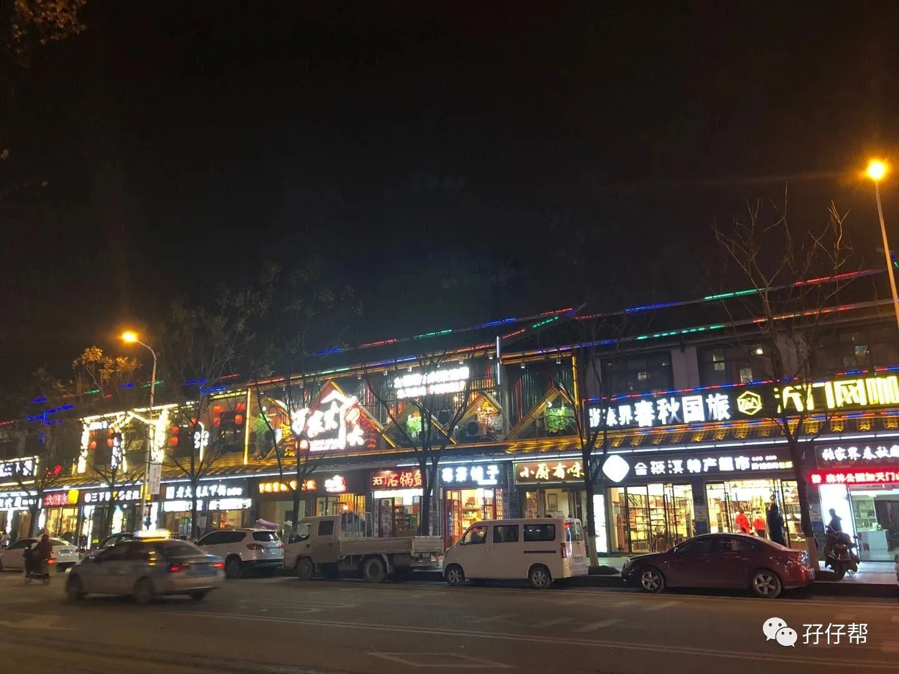
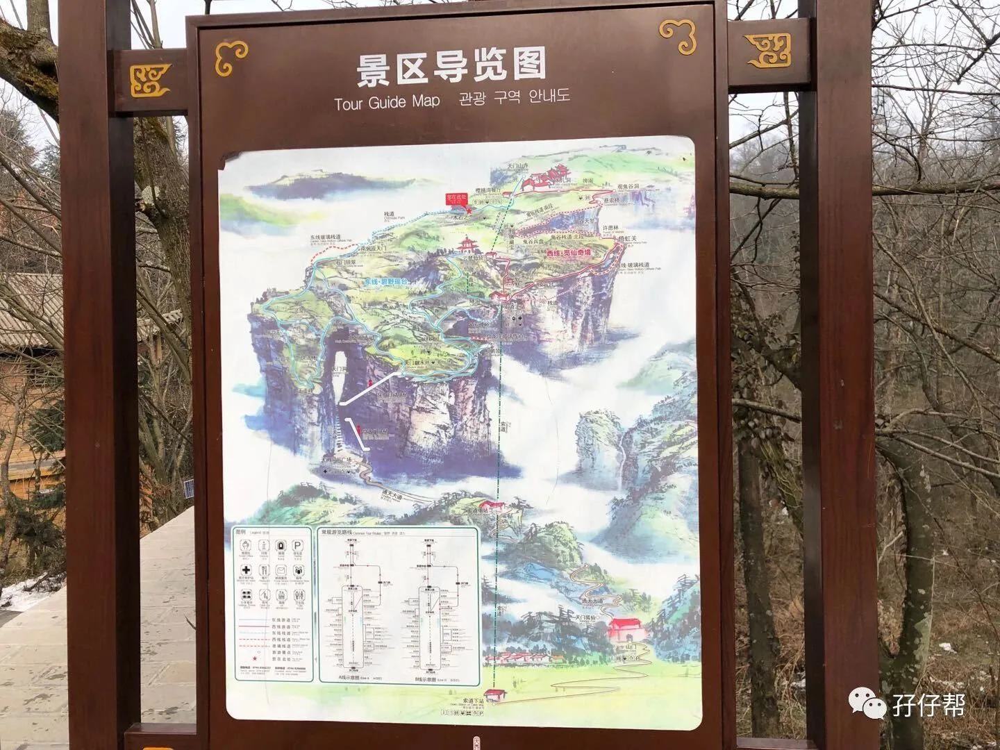
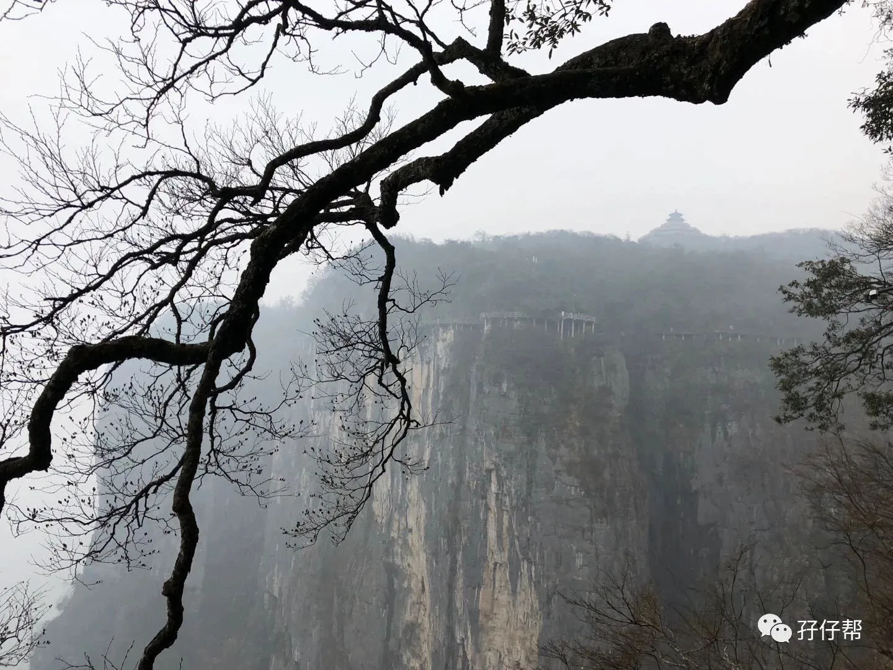
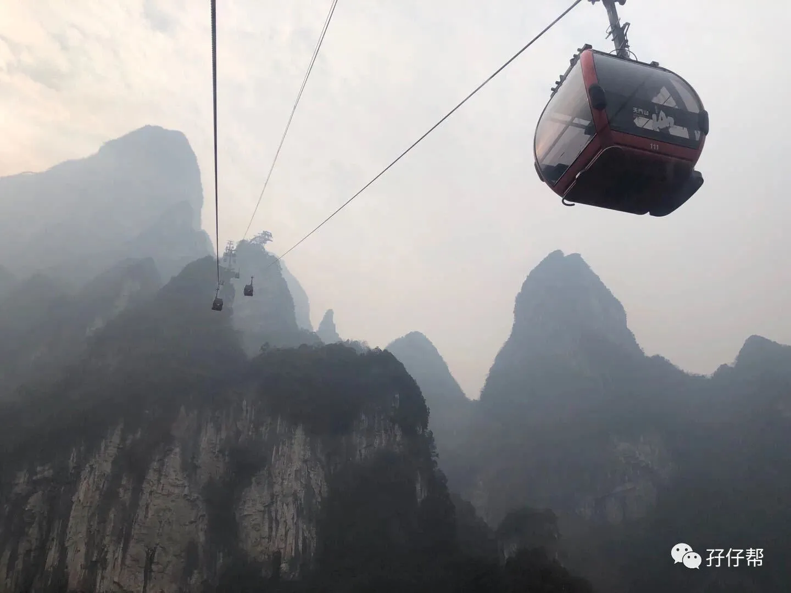
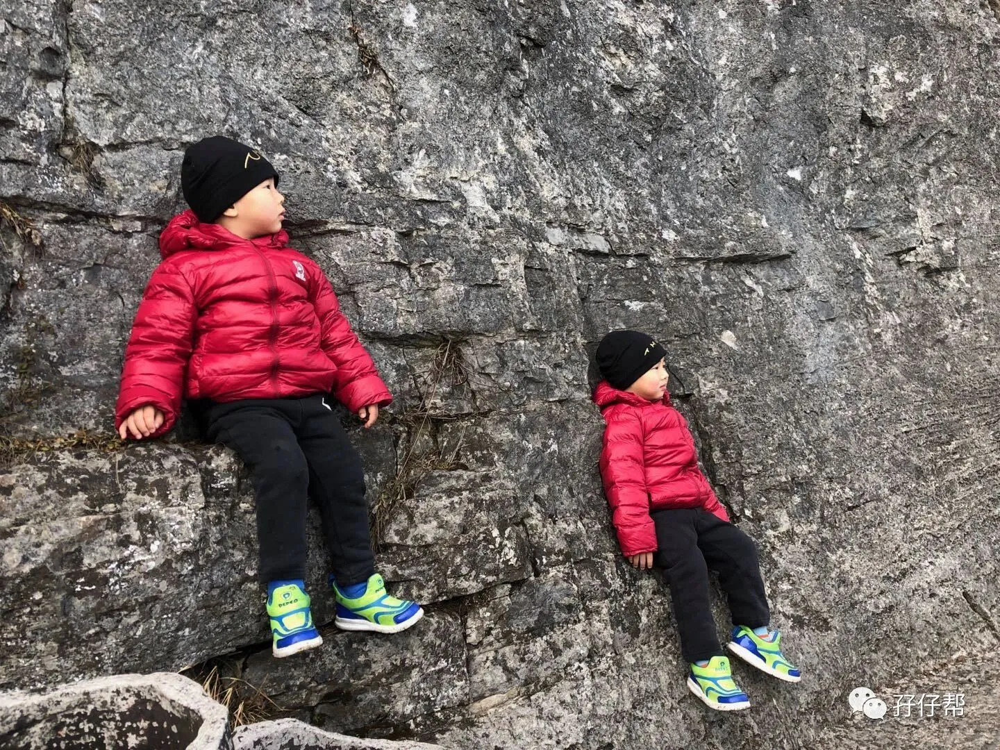
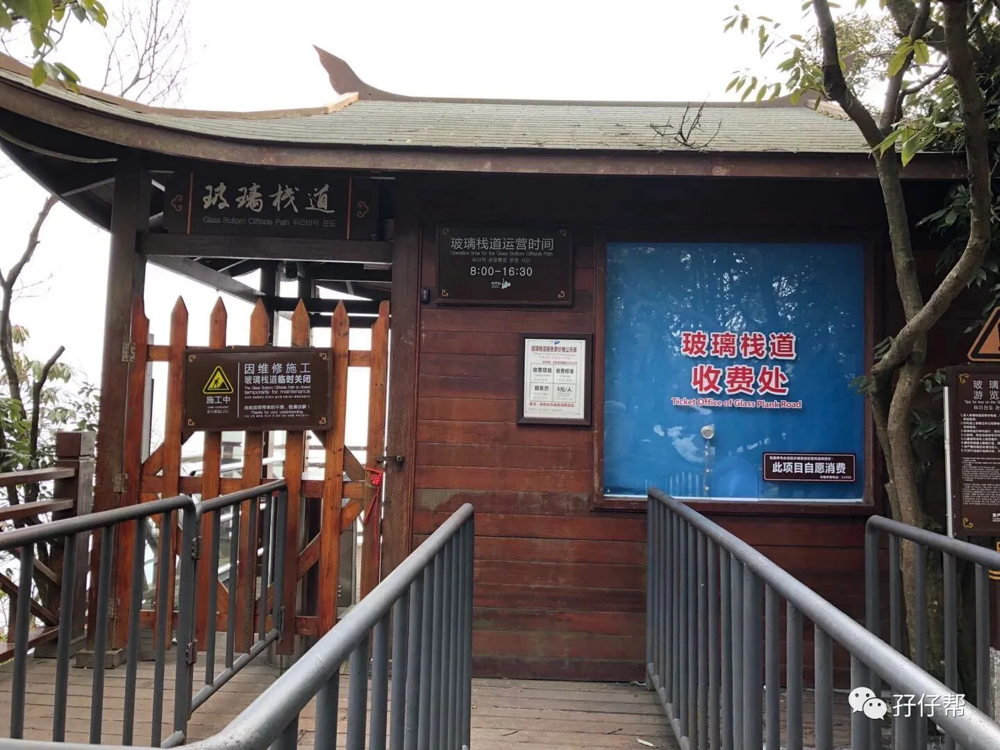
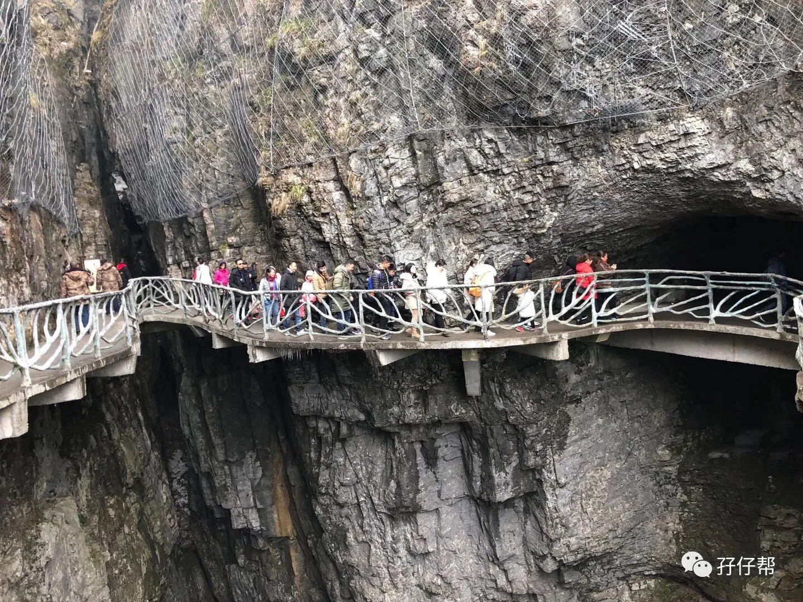
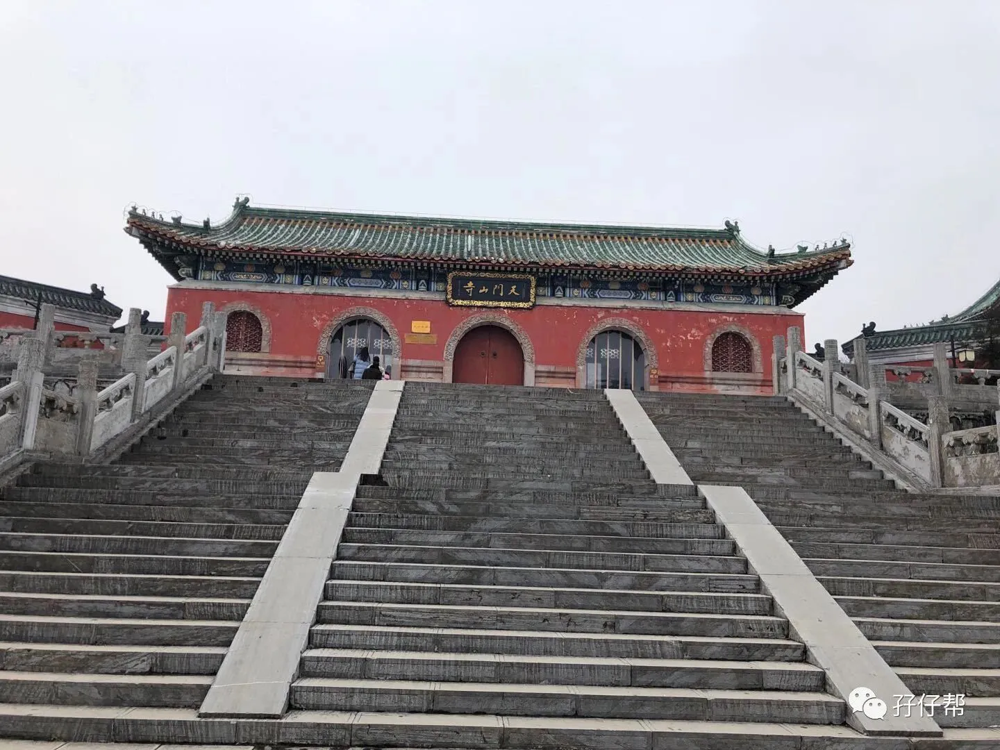
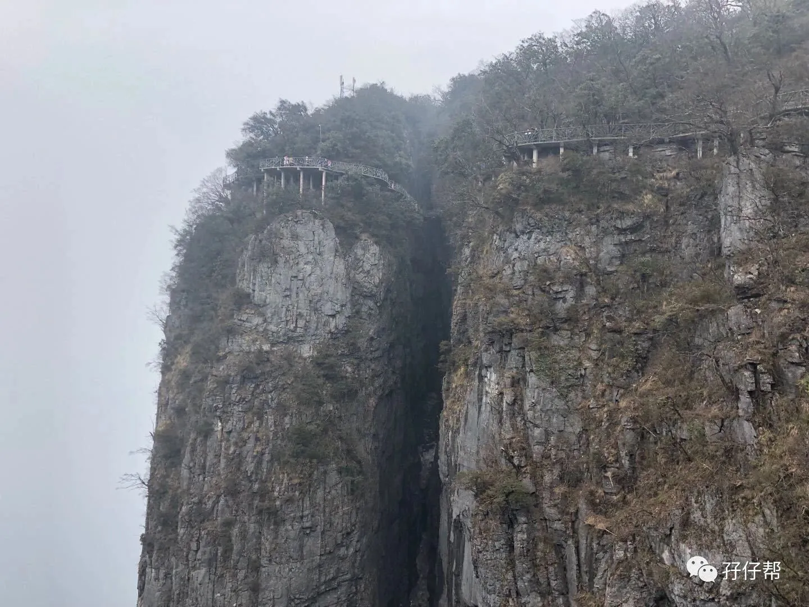
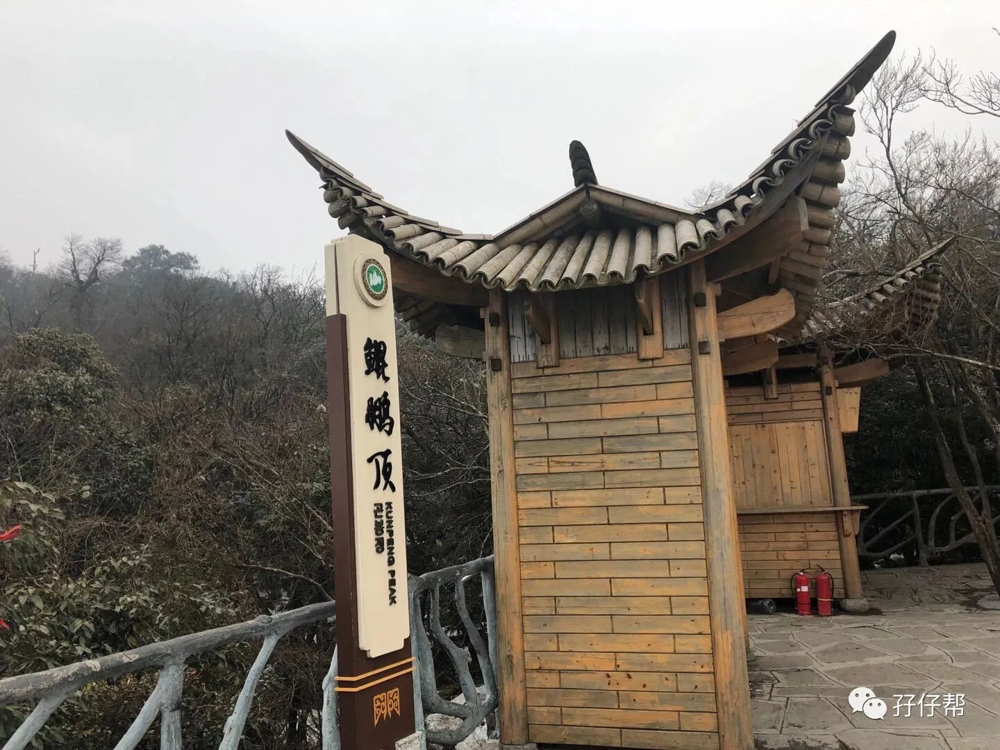
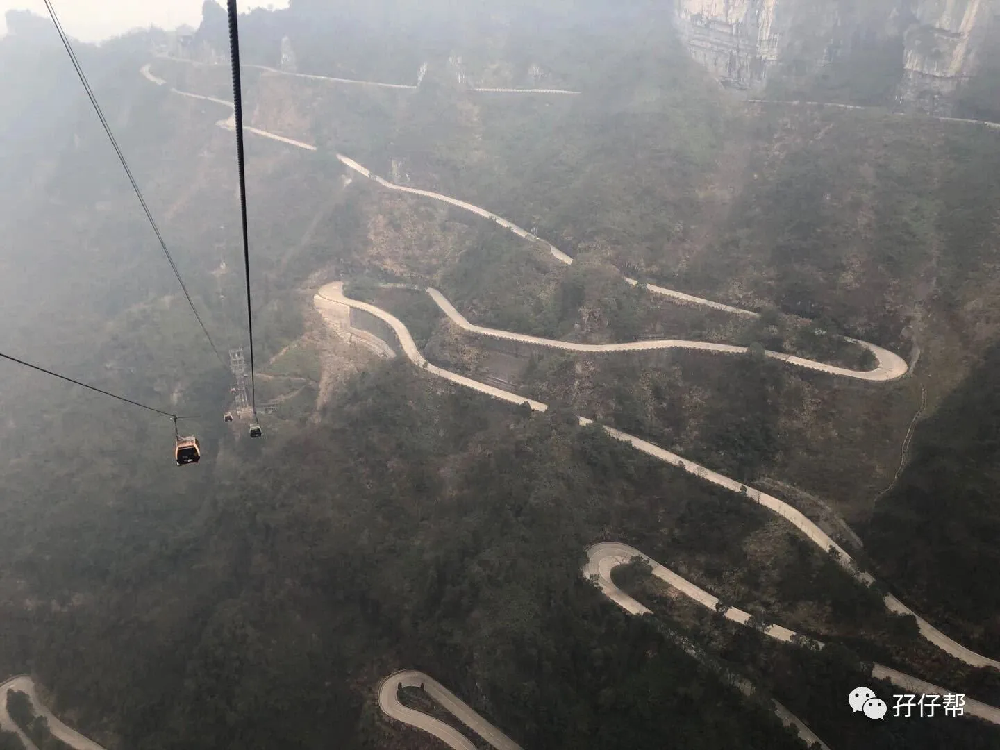